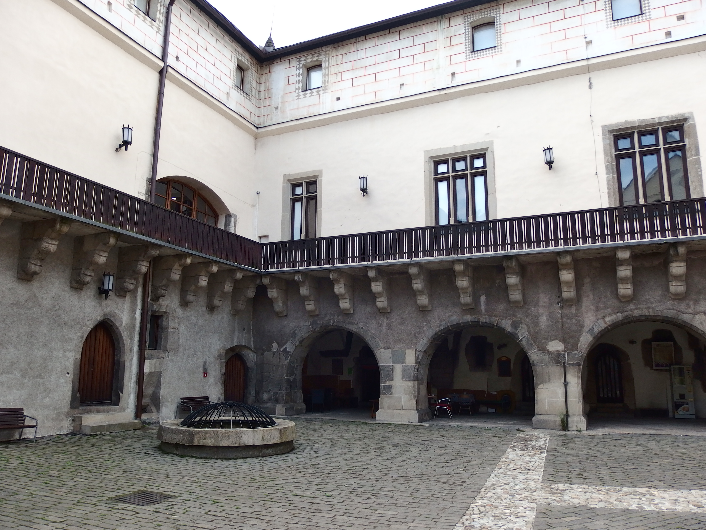

Hradná studňa
Hrad postavili na mieste staršej cirkevnej stavby, archeologicky zistenej na dnešnom nádvorí pri komplexnej pamiatkovej obnove v 60-tych rokoch. Koncepciu nového poľovníckeho zámku ovplyvnila talianska mestská architektúra šľachtických palácov. Hradný, pôvodne neopevnený palác, vybudovali na štvorkrídlovom pôdoryse s dvoma vežami, včlenenými do pôdorysu stavby. Okolo nádvoria obiehala pavlač na kamenných konzolách a priestor medzi dvojicou veží sprístupňovala kamenná arkáda. Dôležitou súčasťou hradu bola poschodová reprezentačná kaplnka, v ktorej bola umiestnená aj kráľovská empora. Smerom do mesta bol rad reprezentačných miestností s mohutnou rytierskou sálou, ktorej steny pokryli freskami a prestropili ju náročne konštruovaným dreveným trámovým stropom. Architektonicky výnimočne v našich pomeroch riešili aj fasády objektu so zvýraznením reprezentačného krídla, ktoré osvetlili oknami s kamennými krížovými prútmi. Architektúra Zvolenského zámku bola vyvrcholením umeleckých snáh 14. storočia, poplatná zjemnenému vkusu Anjouovcov, ktorí na stavbu povolali skúsených európskych staviteľov a kamenárov.
Glanzenberg
Ústie dedičnej štôlne Glanzenberg sa nachádza pri pamätníku padlým v 2. sv. vojne na Kammerhofskej ulici. Najstaršia písomná zmienka o štôlni je z roku 1560. Mala významnú úlohu v počiatkoch ťažby zlatostrieborných rúd na žile Špitaler pod kopcom Glanzenberg. V neskorších dobách, keď jej odvodňovaciu funkciu prevzali nižšie položené odvodňovacie štôlne, slúžila na dopravu, vetranie a fáranie technikov. Sláva a význam Banskej Štiavnice sa zrodili z nerastného bohatstva rúd drahých a farebných kovov, ktoré sa tu ťažili viac ako tisíc rokov. Množstvo európskych a svetových prvenstiev z rôznych oblastí ľudskej činnosti sa viaže k nášmu mestu. Banská Štiavnica bola slobodným banských mestom.V období prvých písomných správ o štôlni (1560) malo mesto dnešný charakter a existovala zástavba, ktorá aj dnes tvorí centrum mesta. Z obavy o stabilitu budov a cesty bola štôlňa po celé stáročia udržiavaná v dobrom technickom stave a preto sa zachovala do dnes.
Čierny Balog - Vydrovo
Lesnícky skanzen Vydrovo je jedinečné lesnícke múzeum v prírode, situované vo Vydrovskej doline pri Čiernom Balogu. Skanzen bol založený v roku 2002 a zriaďovateľom bol štátny podnik Lesy SR. Popri cca 4 km dlhom náučnom chodníku sa nachádza 75 zastávok, prezentujúcich históriu, pestovanie, ochranu a význam lesa, jeho životadárne funkcie a krásy, ale i prácu lesníkov, ktorí ho chránia a využívajú.
Medzistanica štart
Lanovka je kyvadlová s nosnými, ťažnými a príťažnými lanami. Lanovka je dvojúseková, so 4 stanicami na trase. Toto riešenie si vyžiadala extrémna dĺžka celej trasy (vyše 6 km) vzhľadom na vtedajšie technické možnosti[1]. 1. úsek vedie z Tatranskej Lomnice (stanica za Grandhotelom Praha) na Skalnaté pleso Nadväzuje naň 2. úsek zo Skalnatého plesa na Lomnický štít.
Františkova huta
Františkova huta (lokálne len Hámor) je technická pamiatka, ruina továrenskej haly železiarne (železnej huty) z roku 1836. Nachádza sa na Orave v katastrálnom území obce Nižná, v doline Studeného potoka, 2 km po ceste do Zuberca. Budova je vo vlastníctve obce Podbiel, ktorá ju získala darovacou zmluvou podpísanou dňa 9.10.2009 od občianskeho združenia Strom života. Zachovaná je klasicistická fasáda, obvodové múry, vysoká pec, prívodný a odpadový kanál, hámor, dúchadlová komora, halda železnej rudy (za budovou).
Kysucko-Oravská lesná úvraťová železnica
Kysucko-oravská lesná železnica bola úvraťová železnica a patrila medzi najvýznamnejšie lesné železničné trate na Slovensku. Vznikla v roku 1926 dobudovaním spojovacieho úvraťového úseku medzi existujúcou Kysuckou lesnou železnicou (Oščadnica – Chmúra) a Oravskou lesnou železnicou (Lokca – Erdútka). Spojenie vzniklo výstavbou spojovacej trate na úseku Erdútka – Chmúra. Po spojení dosiahla celková dĺžka trate vyše 110 km, z toho 61 km hlavnej trate, zvyšok tvorili odbočky. Od roku 1991 je časť trate Výchylovka (Kubátkovia) - Tanečník, ako technická pamiatka vyhlásená za národnú kultúrnu pamiatku SR. Nazýva sa Historická lesná úvraťová železnica.
Úhornianske jazero - Jazero mieru
Úhornianske jazero nazývané aj ako jazero Úhorná sa nachádza štyri kilometre juhozápadne od obce Smolník a dva kilometre severovýchodne od obce Úhorná v doline Smolníckeho potoka. Počas socializmu bolo jazero nazývané ako Jazero Mieru. Miestnými obyvateľmi je nazývané aj ako Smolnícke pleso. Jazero je 8 metrov hlboké, 4 ha veľké a bolo postavané z lomového kameňa, bez použitia stmelovacích hmôt. Pod jazerom je 35 m dlhá štôlňa. Jazero bolo vybudované na potoku Smolník v 18. storočí ako zásobáreň vody pre banské zariadenia. Jej úlohou bolo aj zachytávať dažďovú vodu z okolitých vrchov a tým zabrániť častým povodniam. Patrí k najstarším vodným stavbám na východnom Slovensku a vo Volovských vrchoch.
Slávikov mlyn v Šaci
Bol postavený koncom 19. storočia a doplnený novšími prístavbami v roku 1925. Pôdorys pôvodnej stavby bol obdĺžnikový, po rekonštrukcii nadobudol podobu v tvare L. Vnútro mlyni je rozdelené dvoma vloženými drevenými stropmi na tri podlažia. V prízemí sa nachádzajú transmisie, na 1. poschodí samotný mlyn, sitá a ostatné strojové vybavenia na 2. poschodí rozvody od výťahov. Pohon mlynu obstarávali dve vodné kolesá. Náhon na centrálnu transmisiu bol pastorkovým prevodom. Počas nedostatku vody bol mlyn poháňaný výbušným motorom. V severnej časti boli umiestnené 4 drevené piesty na trepanie konopí a ľanu. Výťahy a rozvody zrna a múky sú drevené s vnútorným oplechovaním. Vstupné vráta do mlyna sú na južnej fasáde.
Erikova pamiatka c.1

Erikova pamiatka c.2